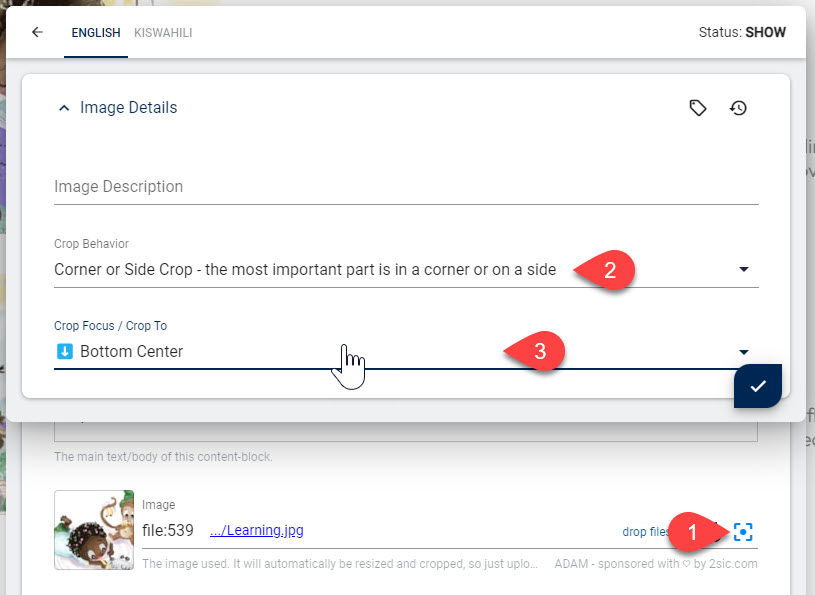

Images Guide (Best Practices & Code)
Images are a crucial part of every website and CMS. We want to be sure that:
- Perfect Editing
- Editors can easily add images
- Editors can give titles to images
- Editors can have some control over how the image is shown - but not too much, it must be within the restrictions of the design
- Perfect Output
- Images look great no matter what the editor does
- Images are accessible (for people with disabilities, etc.)
- Images use the latest possible file formats
- Images load quickly - which also requires images to be the best-possible size
- Perfect SEO & Page Speed
- Images are optimized for search engines
- Images are optimized for page speed, especially mobile page speed
- Pefect Control by the Designer
- The designer determines how images should look in various scenarios
Tip
This guide should help you understand the big <picture> üòè.
Best read this while looking at the Tutorial
For every detail there is much more technical documentation, which will be linked here.
Part 1: Edit UI / UX
The Edit UI presents various options to the user for uploading and configuring images.
It's important to note that v13.10+ has a new feature to let the user customize what part of the image is really important (what corner/edge). This is important in scenarios where a resize would otherwise always show the middle, which may not be appropriate.
Since this feature will only affect the output if the Razor template uses the IImageService, the designer must activate it on the field. Otherwise the feature is not available.
Important: The config-button is only available...
- If the Razor template uses the automatic APIs to render the image
- When using the new Typed code, using the
something.Img("Image")API (see Img(...) and Picture(...)) - or using the IImageService (older way)
- When using the new Typed code, using the
- ...and IF the file is an image
- ...and IF the file "belongs" to the item being edited
If the file is a general file from another item or from the root folder, the metadata is not available. This is important because files from elsewhere could be shared, and editing the metadata could have unexpected side-effects.
Part 2: Image Metadata
When a user edits the image settings in the UI, the data is stored as metadata for this image.
This is important, because generating a perfect <img> or <picture> tag requires this information.
Part 3: Razor Code to Generate HTML for Images
Part 3a: Modern Typed Code
When using modern typed code, the object containing the data is an ITypedItem or something which inherits from it. In this case, the API will take care of almost everything. Just use one of these methods to create the HTML:
thing.Img("Image")- for a simple<img>tagthing.Picture("Image")- for a<picture>tag
Part 3b: Legacy Code (older APIs)
The older API used the IImageService to generate the HTML. This in turn needed a IField object to figure out what to do.
Part 3b Legacy Code - Dynamic Field
If a content item stores the image on a property .Image then something like Content.Image would return /Portal/0/Adam/some-image.jpg.
In this case, the IImageService cannot find the metadata.
This is why we need to give it the entire field, not just the value. This is done using Content.Field("Image")
and will get your code a IDynamicField.
Part 3b Legacy Code - ImageService
The IImageService will take all the known information and generate an <img> or a <picture> tag.
This can be used in its default implementation just using .Img(Content.Field) or .Picture(...).
In this case is uses the default Content settings (see below).
If you need more control, there are 3 options:
- The
Img(...)command has many more parameters for common scenarios such as using other settings, factor, imgAlt or imgClass - You can also generate very custom settings using the
.Settings(...)command on the ImageService - You can also take the resulting object like
var img = imgSvc.Img(Content.Image)and use it to generate the final tag yourself.
Some Tutorials to learn this
Part 4: Settings and Recipes
Settings are pre configured parameters how the image is to be resized. They are stored at App, Site, Global or Preset level.
By default the configuration called Content is used for images in the Content of the page.
Other settings also exist, such as Lightbox or Screen.
You can also create your own configurations, such as PersonProfile.
üëâüèº Read more about Image Settings
In your Razor code you can create new settings or modify existing ones using the .Setting(...) command on the ImageService.
- To create settings based on the
Contentuse.Setting("Content", ...) - To create brand new settings, use
.Setting(false, ...)
Recipes define what variants of the image should be generated for other sizes, as well as other parameters to use when generating img or picture tags.
The initial configuration is also stored in the settings and will be used, unless you specify something different.
üëâüèº Read more about Image Recipes
You can also generate your own recipes:
- create a new recipe like this:
.Recipe("2x, 3x")- this is only meant to create a quick recipe with a few variants. - inherit/expand an existing recipe like this:
.Recipe(originalRecipe, ...)
Good to Know: Link.Image(...) API
In the rare cases where you just need a URL and not the full HTML, check out the Link.Image(...) API.
It is not as powerful as the ImageService but if you only need a URL it may be what you need.
üéì Image Resizer Parameters with Link.Image
History
- Guide created for v13.10
- Updated for v16 which introduced the new Typed API